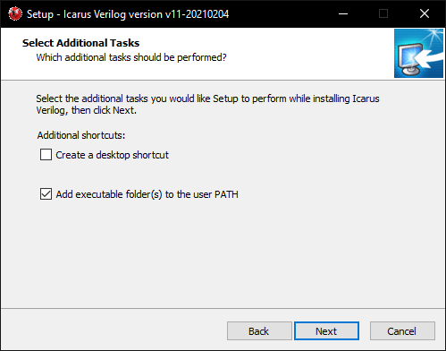

Instalación de iVerilog¶
Una vez que tiene acceso a Ubuntu o Windows, puede proceder con la instalación del compilador Icarus Verilog.
Instalación en Ubuntu¶
Abra una terminal (Ctrl + Alt + T en Ubuntu) y ejecute el siguiente comando:
sudo apt install iverilog
Se le solicitará una contraseña, utilice la misma configurada durante el proceso de instalación de Ubuntu.
En adición al compilador, también usaremos la herramienta GTKWave para visualizar los resultados durante el proceso de verificación. Para instalar esta herramienta, desde la misma terminal ejecute el siguiente comando:
sudo apt install gtkwave
Instalación en Windows¶
Descargue el instalador de iVerilog. Inicie el instalador y siga las instrucciones de instalación en pantalla. Cuando se le solicite, seleccione la opción de añadir el ejecutable al PATH.
Este proceso instalará también la herramienta GTKWave, la cuál será de utilidad para visualizar los resultados durante el proceso de verificación.